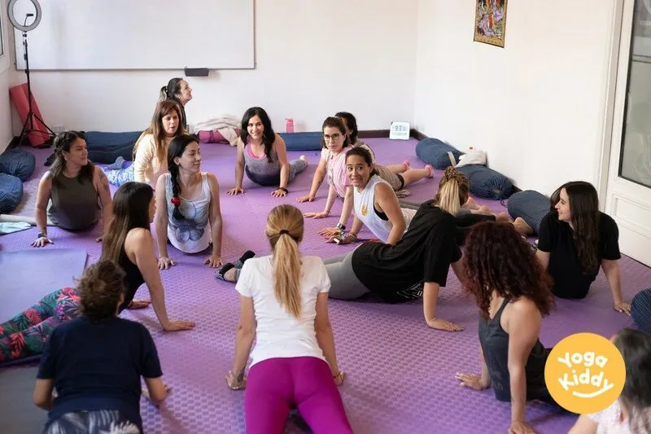
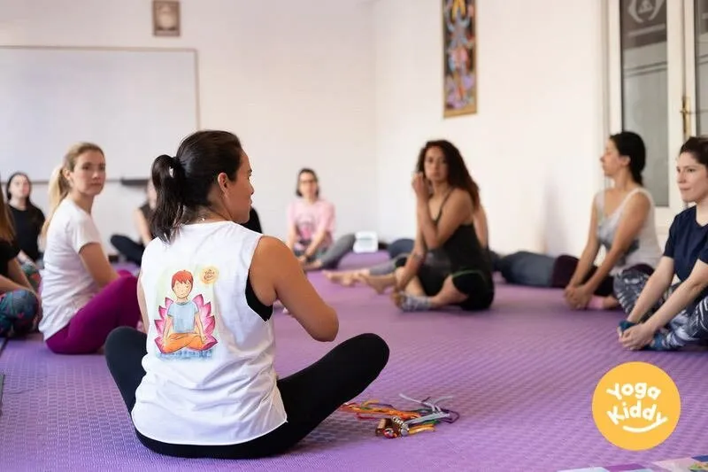

¿Te apasiona el yoga y quieres compartir sus beneficios con los niños? Nuestra formación intensiva de Yoga para niños, de 18 horas y 2 días de duración, es la oportunidad perfecta para que adquieras las habilidades y los conocimientos necesarios para enseñar y guiar con éxito sesiones de yoga para niños.
Nuestra formación está diseñada para adultos que quieren aprender a enseñar yoga a los niños de una manera divertida y atractiva. Entendemos que los niños tienen necesidades únicas y nuestra formación está diseñada para satisfacer esas necesidades. Nuestros formadores son profesores de yoga con experiencia y tienen un profundo conocimiento de cómo adaptar el yoga a los niños.
A lo largo de la formación, aprenderás sobre la importancia del yoga para los niños y cómo puede mejorar su bienestar físico, emocional y mental. Aprenderás sobre las diferentes posturas de yoga que son adecuadas para los niños, así como la forma de adaptar las posturas de yoga a los diferentes grupos de edad. Nuestros formadores también le proporcionarán información sobre cómo crear sesiones de yoga atractivas e interactivas para los niños, así como la forma de estructurar sus clases.

Además de aprender sobre los aspectos técnicos de la enseñanza del yoga a los niños, también tendrás la oportunidad de explorar tu propio crecimiento y comprensión personal. La formación le proporcionará herramientas para reflexionar sobre su forma de relacionarse y enfocar su trabajo con los niños. Se te animará a avanzar en un camino de autoconocimiento, aceptación y reconocimiento de que no estás solo en esta búsqueda y en este profundo deseo de cambio en nuestros sistemas educativos y en las vidas de nuestros niños.
La formación no es sólo informativa, sino también interactiva y divertida. Tendrás la oportunidad de practicar la enseñanza del yoga a los niños y experimentar de primera mano los beneficios del yoga para los niños. Esto le dará la confianza y las habilidades para enseñar yoga con éxito a los niños en su comunidad.
Además de la formación, también recibirás un acceso a nuestra comunidad online de profesores de yoga. Esta comunidad te proporcionará apoyo continuo, inspiración y recursos para ayudarte a seguir creciendo y desarrollándote como profesor de yoga para niños.
Creemos que todos los niños merecen tener acceso a los beneficios del yoga y estamos dedicados a proporcionarte las herramientas y el conocimiento para que eso suceda. Únete a nosotros en nuestro curso intensivo de Yoga para Niños de 18 horas y 2 días de duración y comienza tu viaje para convertirte en un profesor de yoga para niños de éxito.
La formación de yoga infantil se imparte en diferentes lugares del mundo, como México (CDMX, Guadalajara), España (Barcelona, Madrid), Chile (Santiago, Viña Del Mar), Bélgica (Bruselas, Jodoigne) y Francia (París) para hacerla accesible a más personas.
Obtenga más información sobre nuestra formación en Yoga para niños haciendo clic aquí